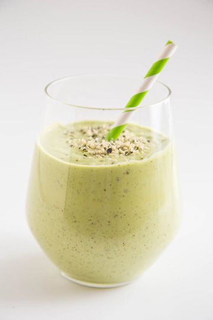

The Green Machine Protein Shake
Serves 1
Main Protein Source: Greek yogurt
Protein Boosters:Almond butter + hemp hearts
This thick, subtly sweet shake just might be the most delicious way to drink your greens.